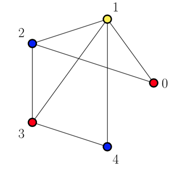

In the previous tutorial, we explored a very simple approach, step-by-step, to color a graph using the three colors available (blue, red and yellow).
Now we’ll put that approach into practice by using a C++ implementation (from the awesome guys at GeeksforGeeks) of that algorithm and my contribution to it, that was among others features, to generate a visualization of the graph colored by using the worldwide famous and open-source tool LaTeX and the powerful TikZ package.
input.txtOne of the most important parts of the program is the method that actually colors the graph using the greedy approach.
However, before the greedyColoring() call, that actually colors the graph, the input.txt file is where you enter the information about your graph G(V,E).
The first line is the number V of vertices and the following ones should contain the edges E. Let’s say we have the graph below:
The input file should look like this:
5
0 1
0 2
1 2
1 3
1 4
2 3
3 4
By doing so, the program will read that as G(5, 7) meaning your input graph has 5 vertices and 7 edges which connections are explicited in the lines.
greedyColoring() methodThis method contains the main part of the code, which is the result array. This result array of size V is responsible for storing the final colors assigned to the vertices.
int result[V];
// Assign the first color to first vertex
result[0] = 0;
// Initialize remaining V-1 vertices as unassigned
for (int u = 1; u < V; u++)
result[u] = -1; // no color is assigned to uThe first color assigned is going to be 0 and the algorithm assigns the remaining ones as it goes through the adjacency list.
As a result, the final result vector for the input graph illustrated here looks like 0, 1, 2, 0, 2 (5 vertices from 0-4) meaning that vertex 0 is colored in 0, vertex 1 is colored in 1, vertex 2 is colored in 2 and so on.
To handle the output in LaTeX, I created an array that chooses a real color based on the index, i.e., to get the color represented by the number:
string key_value_colors[] = {"red", "yellow", "blue"}; // choose color based on index - 0 is red, 1 is yellow etc.Therefore color 0 is red, color 1 is yellow and color 2 is blue. The program replace them by the ones set in key_value_colors.
LaTeX/TikZ code generatedBy running the C++ code we get a .tex file that can be compiled to see the result of the algorithm graphically. It’s important to mention that in order to automatically see the .pdf you need to have LaTeX installed so the pdflatex command is recognized by the Terminal (Linux/Mac OS). Besides, the output for this example should be:

Finally, in order to demonstrate how to use the program, I recorded this video where I show how to go from a regular graph as the input to the graph colored in a .pdf file as the output.